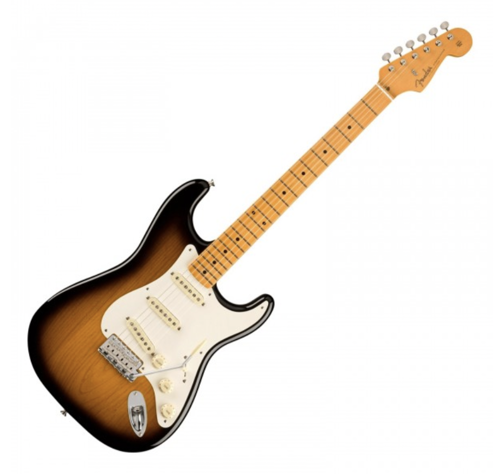

Fender Stratocaster
The Iconic Fender Stratocaster Guitar
The Fender Stratocaster is an iconic solid-body electric guitar known for its sleek, contoured shape, versatile tone, and playability. It typically features three single-coil pickups, a tremolo bridge, and a five-way selector switch, allowing for a wide range of tonal possibilities. With a history spanning over six decades, the Stratocaster has been played by countless musicians across genres, making it one of the most recognizable and beloved guitars in the world.
Buy It More infoOther featured guitars
The guitar is more than just an instrument - it's a gateway to self-expression, creativity, and endless possibilities. Through the power of music, we can connect with ourselves and others in profound ways, transcending language, culture, and time. As guitarists, we have the privilege of channeling our thoughts, feelings, and experiences into a medium that can move and inspire people of all ages and backgrounds. But with this privilege comes responsibility - to honor the history and tradition of the guitar, to embrace innovation and experimentation, and to never stop learning and growing. So let us pick up our guitars with humility, passion, and purpose, and let us use them to create a better world, one note at a time.